客户体验
登录 → 我的订单 → 申请退款 → 我的申请 → 回答补证 / 等待审核 → 查看结果
本人数据、单行全额、文本材料售后专员体验
公共队列 → 领取 → 原始资料 + Agent建议 + 政策 → 核验 / 补证 → 人工审批 → 执行结果
一个当前负责人，旧建议失效可见商家管理员体验
工单概览 → 协调或明确接管 → 共用审核详情；人员管理与政策查阅
仅本商家，接管不能绕过审批约束
共用入口；凭用户名密码登录，角色来自持久账号，不提供角色自选或公开注册。
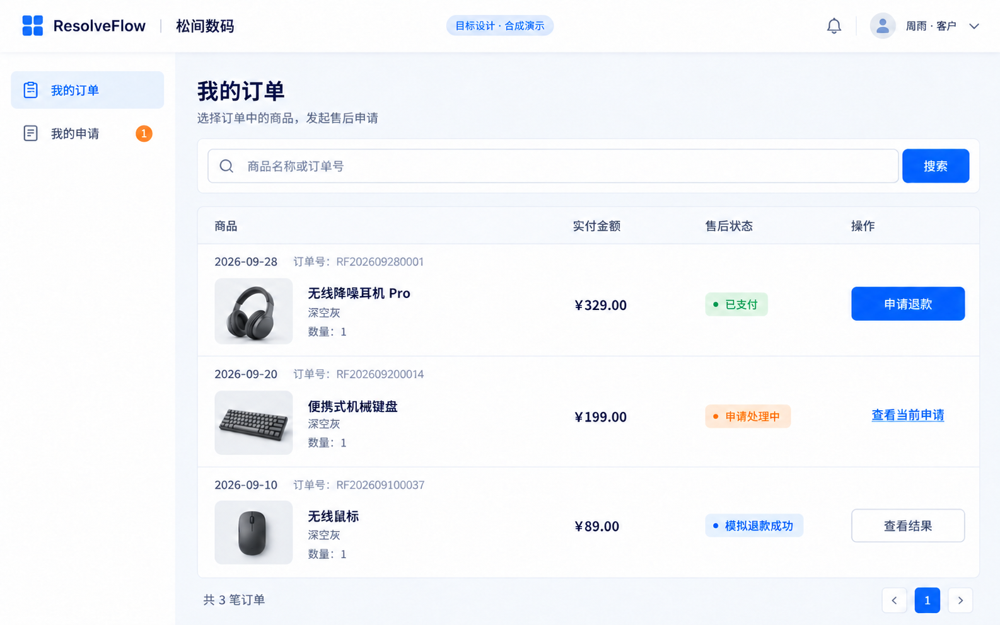
本人订单；未申请行可申请，活跃申请进入详情，成功退款行只能查看结果。
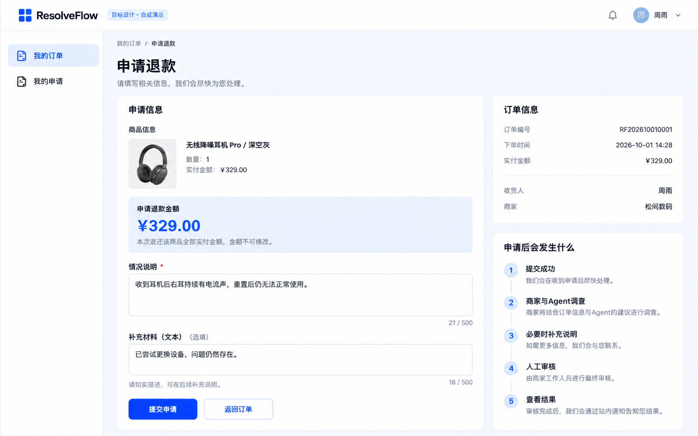
固定单行全额金额；情况说明必填、文本材料可选。创建成功进入详情，材料失败要单独反馈。
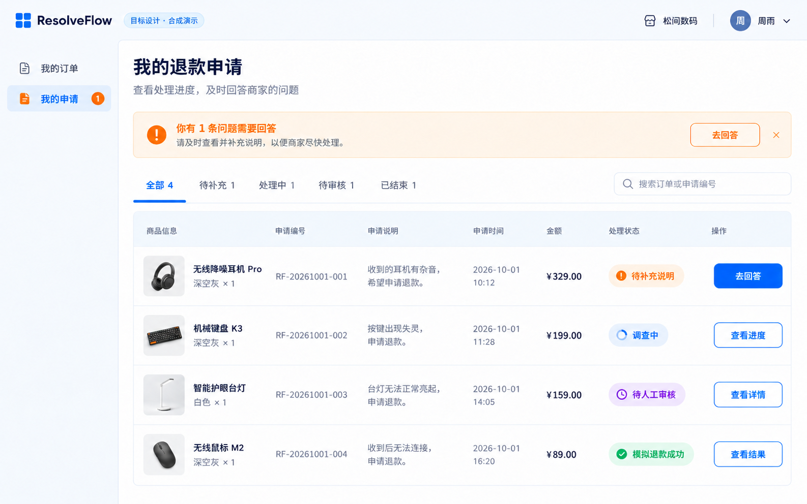
本人申请分页与状态筛选；待补证可发现，不读取商家全队列后前端过滤。
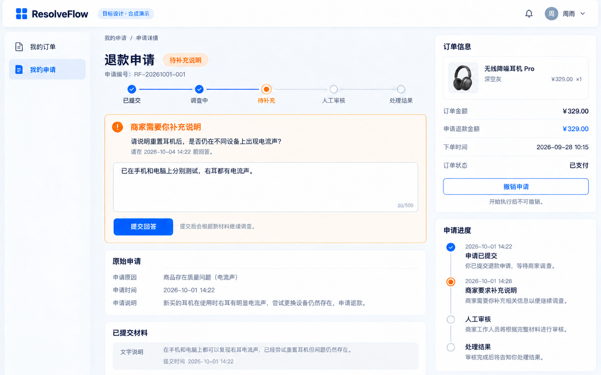
当前问题自动关联；回答后进入新调查，保留回答历史；允许撤销时提供有理由的确认。

详情结果的五种变体；成功、拒绝、UNKNOWN、撤销、补证过期不能混为同一终态。
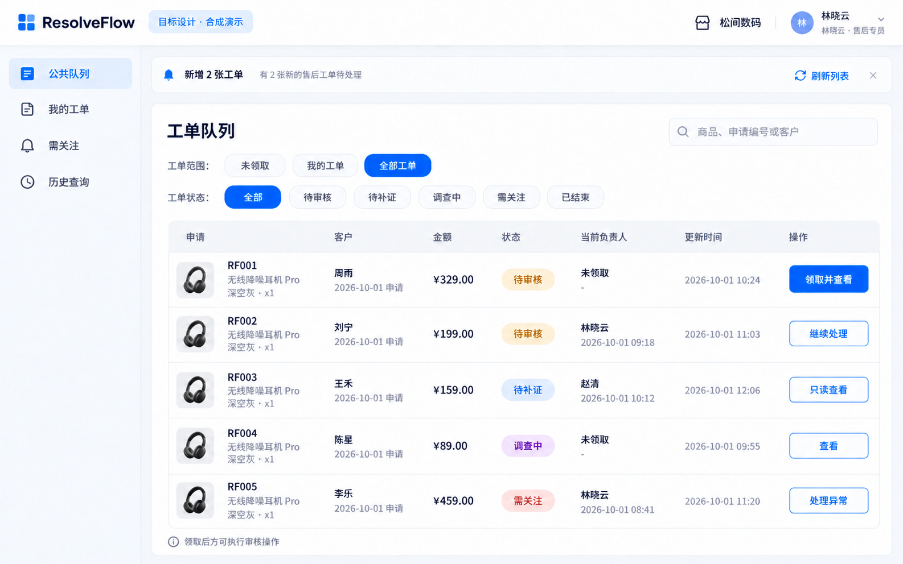
本商家公共队列；领取、负责人、只读边界。领取冲突刷新后只读。
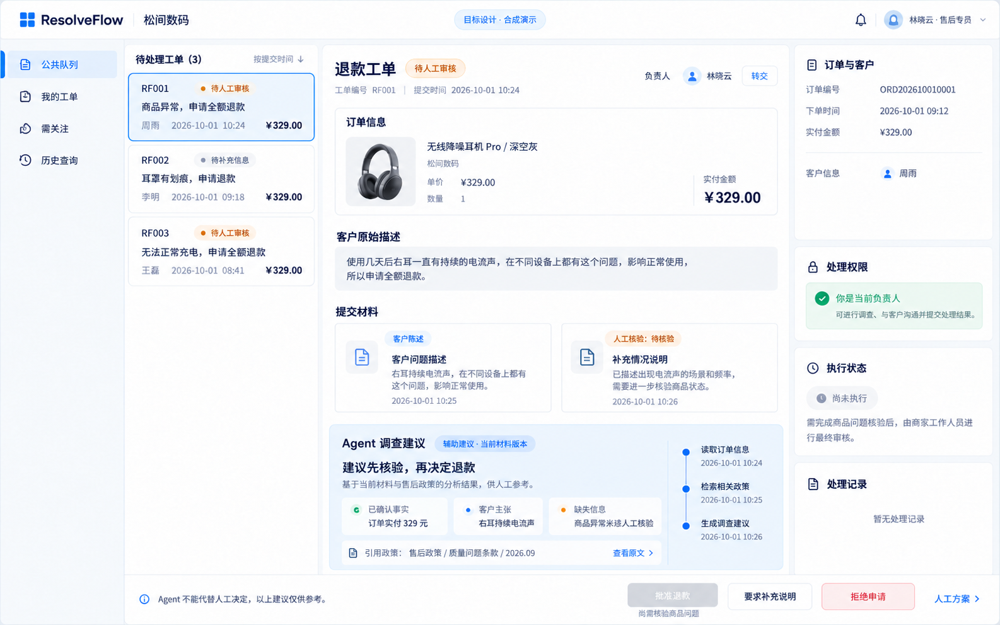
负责人查看原始资料、材料、当前调查与引用；未核验的损坏不能直接批准。
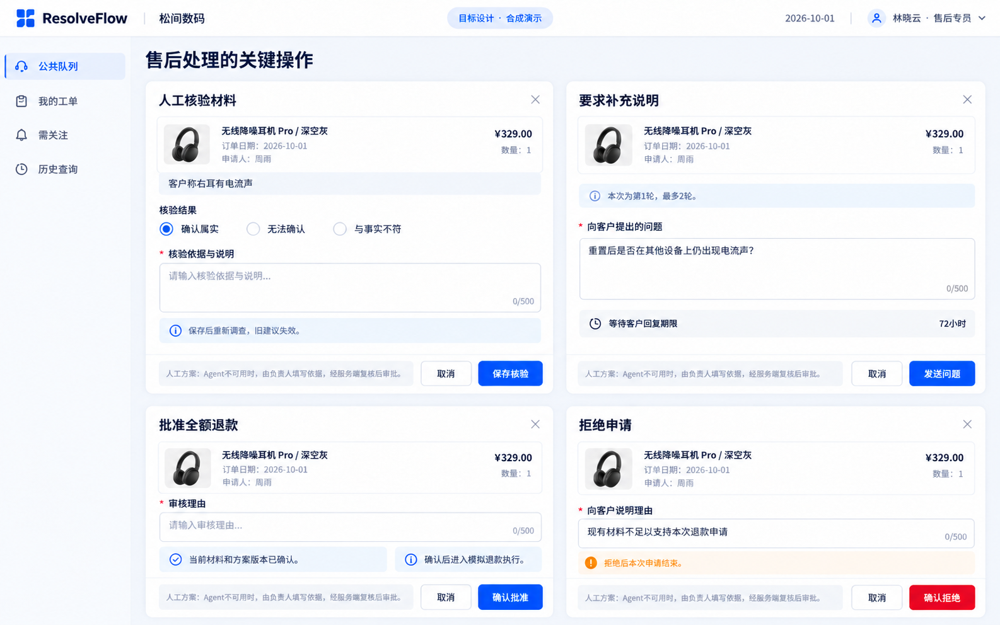
核验、补证、批准与拒绝弹窗；必填依据/理由，保存成功后以服务端状态更新。
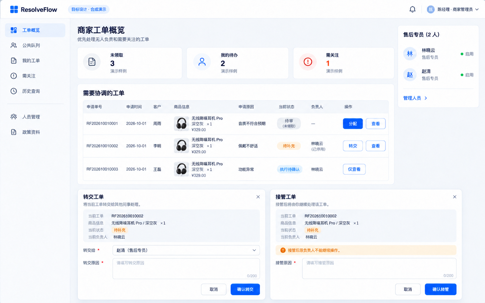
管理员概览与转交/接管弹窗；管理功能属于共用商家端，管理员无隐式审批特权。
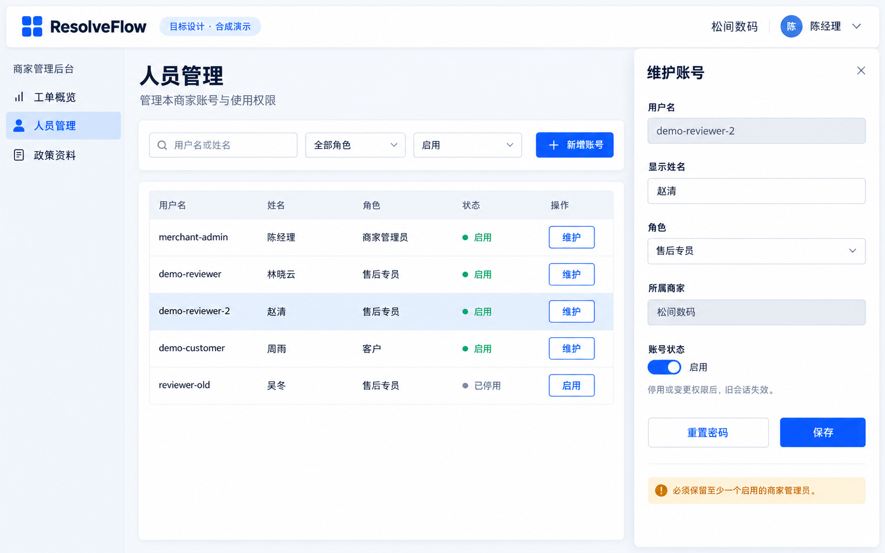
本商家账号列表、新增/维护、启停及密码重置；不得改商家归属或停用最后一个管理员。
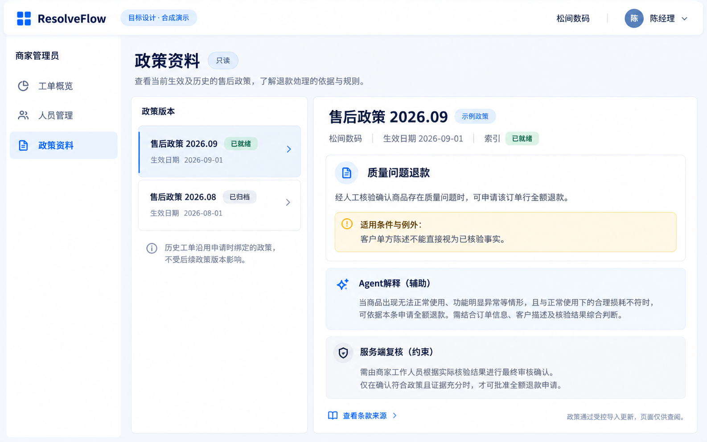
已导入政策及版本、有效期、索引状态，只读；历史工单不换绑定政策。
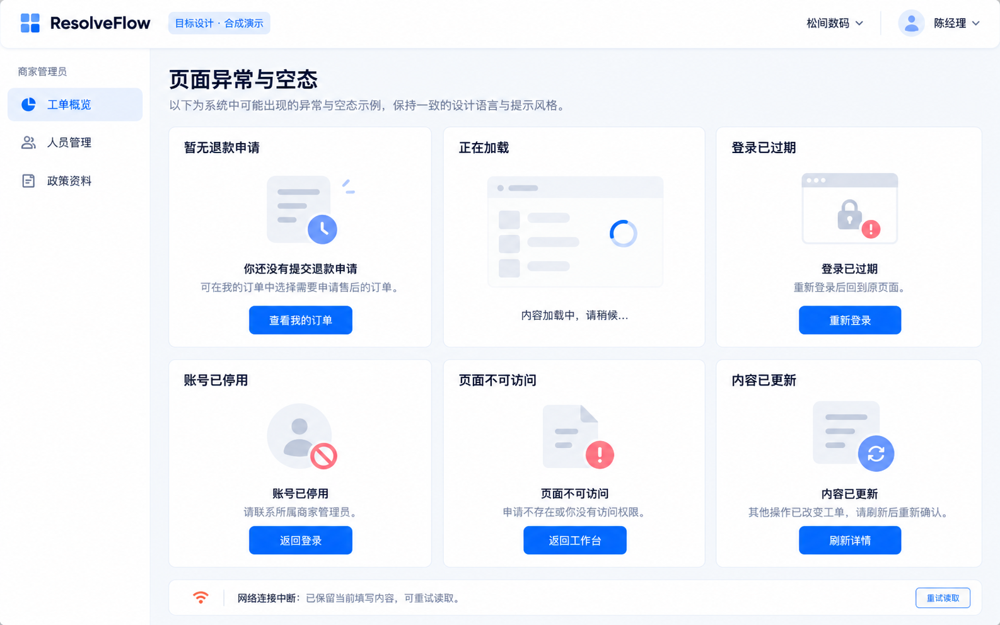
各端空态、加载、失效登录、停用、访问拒绝、版本冲突、断网反馈。
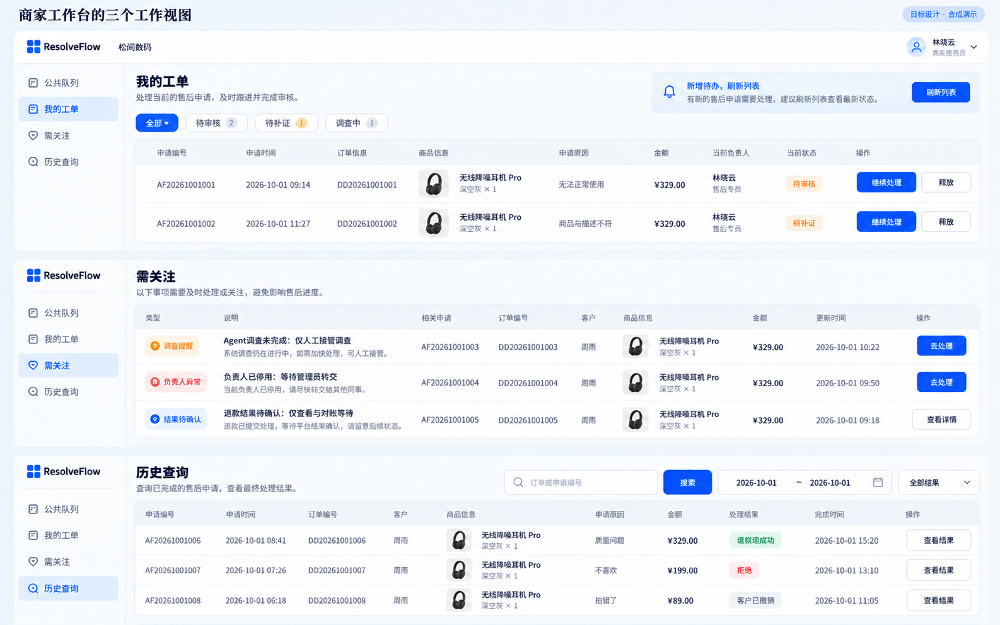
复用队列的我的工单、需关注、历史视图；释放必须填写理由，终态只读。
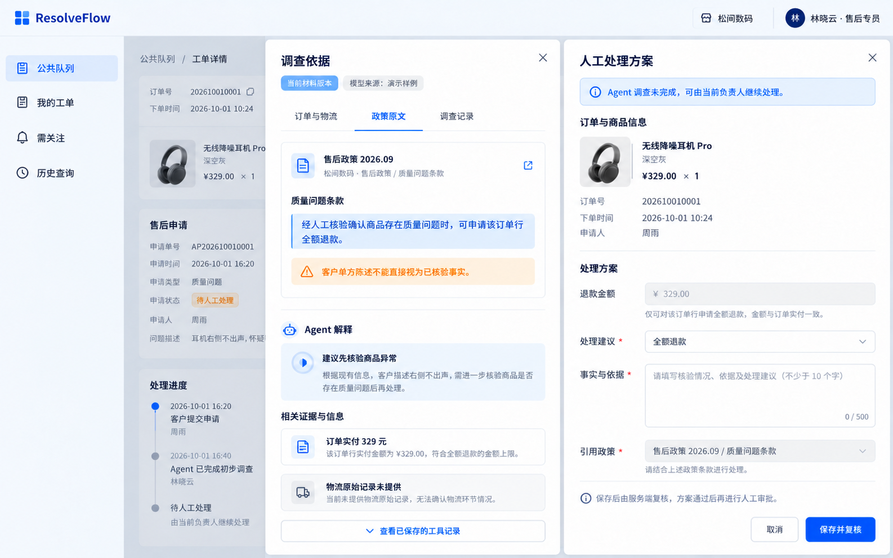
已保存来源与政策阅读抽屉、人工方案表单；人工方案需复核，不能绕过审批。
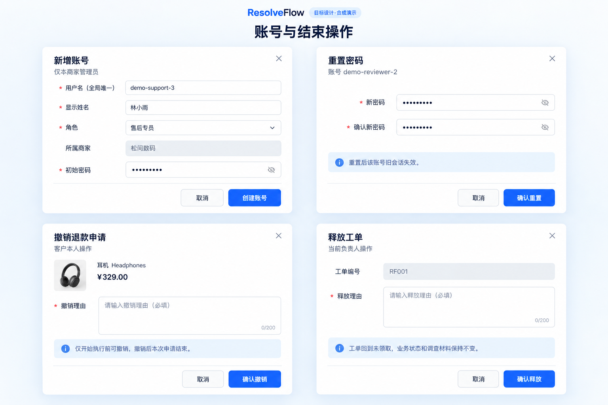
新增账号、密码重置、客户撤销、负责人释放的确认表单，权限与状态由服务端决定。